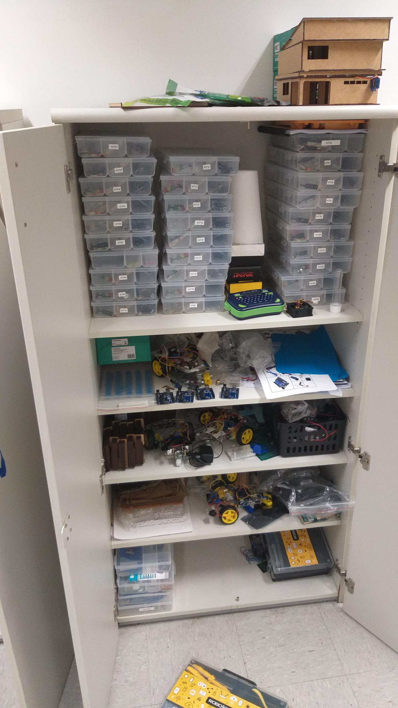

Criação de um boné com sensor de proximidade integrado com um alarme que alerta apita quando aproxima de um objeto
Construção de um carrinho seguidor de linha controlado por arduino.
Construção de um carrinho que quando detecta obstáculos vira em 90 graus para desviar.
Um vídeo que resume todas as atividades realizadas pela turma ao longo do ano.
Assistir ao VídeoRegistro da organização dos materiais e ferramentas utilizados nos projetos de IoT.
